САЛАЗАРСТОРМГАРД
Не зеркала вина, что скривлен рот
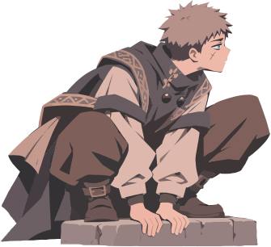
- Рост
- 171 см
- Вес
- 72 кг
- Цвет волос
- #B59189
- Цвет глаз
- #AADDF6
Пятнадцать лет, а уже весь в шрамах. Не то чтобы их было много, но нескольких тонких полос на лице вполне достаточно, чтобы при желании изображать бывалого искателя приключений. Желающих, как правило, находится ровно один.
Коренастый, широкоплечий, с короткими взъерошенными волосами и физиономией, на которой подозрительно часто появляется самодовольная ухмылка. Выражение это, впрочем, обманчиво: иногда он действительно понимает, что происходит. Подбородок широкий, но черты лица ещё по-детски мягкие, а взгляд наполнен наязвейшей усмешкой, словно собеседник только что сказал нечто исключительно глупое и теперь должен самостоятельно догадаться, что именно.
В одежде предпочитает простор. Мантии, балахоны, длинные рубахи, свободные штаны — всё, что позволяет выглядеть солиднее собственных пятнадцати лет и не стесняет движений. Особенную слабость питает к многослойным одеяниям с широкими рукавами, в которых при должном старании можно сойти за настоящего волшебника. Правда, пока скорее за волшебника, который случайно надел мантию своего учителя.
На руке носит старинную печатку с гербом рода Стормгард. Вещь, несомненно, благородная, фамильная и чрезвычайно важная. По крайней мере, так утверждает её владелец.
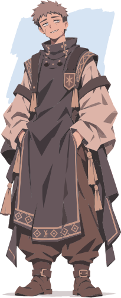
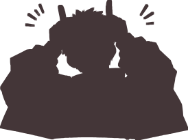
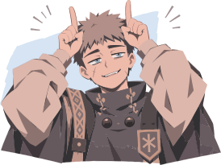
- Сплетни
- Быть первым
- Похвалу наставника
- Споры
- Чёрный юмор
- Кислые ягоды
- Острую еду
- Морепродукты
- Море
- Крыши
- Грозу
- Первый снег
- Старые дома
- Звёздное небо
- Фехтование
- Рыбу
- Нарушенные обещания
- Ранние подъёмы
- Скуку
- Лес
- Диких зверей
- Одиночество
- Давать обещания
Хорошее мнение о себе нужно беречь. Особенно если больше никто его не разделяет. Стормгард придерживается этого принципа с завидным постоянством. Он умён, талантлив, благороден происхождением и, вне всякого сомнения, предназначен для чего-нибудь выдающегося. По крайней мере, сам он в этом совершенно уверен.
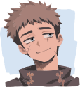
Все мы стремимся урвать любые кусочки счастья, до которых способны дотянуться. Ему нравится выглядеть рассудительным, опытным и значительным. Поэтому чужую глупость он встречает с терпением существа, которое уже многое повидало за свои пятнадцать лет.
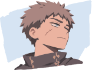
Любопытство у него бесстыжее, с той жестокостью, какая бывает только у детей. Вежливость и такт придумали взрослые, которые, вообще-то, ничего не смыслят в веселье. Какого цвета была твоя боль, когда тебе отрубали ногу? Почему ты плачешь? Болеть ведь уже нечему...
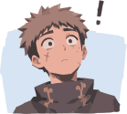
Людей он любит значительно больше, чем показывает. Просто большинство из них ужасно утомительны, задают глупые вопросы и почему-то обижаются на совершенно безобидные замечания. Собственными переживаниями Стормгард делится неохотно, предпочитая отшучиваться или переводить разговор. Ему куда проще помочь человеку, чем признаться, что тот ему дорог.
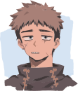
К повседневным обязанностям относится с куда меньшим воодушевлением. Природа наградила его достаточно живым умом, чтобы быстро разбираться в интересующих вещах, и достаточно скверным характером, чтобы игнорировать остальные. Особенно если последние требуют терпения, усердия или раннего подъёма. Словом, всего того, что явно не пристало представителю старинного рода.
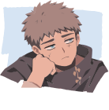
Особенно это касается Даэнорта и его второго воспитанника. Мнение первого для Стормгарда имеет исключительную ценность, хотя признавать это вслух совершенно необязательно. Мнение второго, разумеется, ничего не значит. Именно поэтому его приходится постоянно оспаривать.
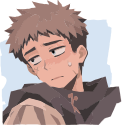
Вообще, жизнь слишком коротка, чтобы тратить её на бессмысленные тревоги. Узнать побольше, забраться повыше, попробовать невозможное — вот занятия, достойные внимания. Прошлое уже случилось, будущее ещё не наступило, а настоящее обычно предлагает достаточно возможностей, чтобы испортить себе репутацию прямо сегодня.
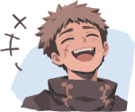
И всё-таки иногда, когда шутки заканчиваются, а привычная самоуверенность оказывается бесполезной, Стормгард становится непривычно тихим. Он хорошо знает, что значит остаться одному. И хотя за прошедшие годы научился почти не вспоминать об этом, мысль однажды снова потерять обретённый дом пугает его куда сильнее, чем хотелось бы.
Но об этом, конечно, никто не спрашивал.
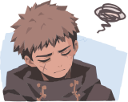
- Род
- Стормгард
- Происхождение
- За пределами континента
- Текущий статус
- Квестпостной
У каждого приличного рода должна быть история. Желательно древняя, славная и полная выдающихся предков. У Стормгардов, несомненно, была именно такая. К сожалению, единственный доступный представитель семейства помнит её из рук вон плохо.
От прежней жизни у мальчишки сохранились обрывки воспоминаний: большой дом, морской воздух, знакомые лица и фамилия, которую полагалось произносить с достоинством. Чем ближе память подбирается к последним дням его детства, тем менее охотно выдаёт подробности. Иногда кажется, будто он помнит больше, чем способен объяснить. Иногда — будто и помнить особенно нечего.
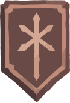
Зато осталась печатка. Старинная, с фамильным гербом, совершенно настоящая. Достаточное основание, чтобы считать себя наследником почтенного рода, о котором, к величайшему недоразумению, никто из окружающих никогда не слышал.
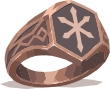
Каким образом десятилетний Стормгард оказался посреди лесов Зеленолесья, он объяснить не может. Зато последующие недели запомнил куда лучше, чем хотелось бы.
Холод, голод, колючие заросли, ночёвки где придётся и совершенно возмутительное отсутствие прислуги. Лес не делал никаких скидок на происхождение, не проявлял уважения к фамильному гербу и вообще отличался крайне дурными манерами.
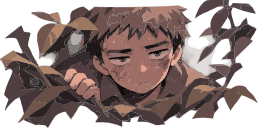
К моменту, когда его обнаружил Даэнорт, мальчишка представлял собой жалкое зрелище: исхудавший, грязный, исцарапанный и порядком измученный. Несколько тонких шрамов на лице остались ему на память об этих скитаниях.
Даэнорт оказался эльфом-авантюристом, основателем поселения у ущелья и местной Гильдии искателей приключений. По каким причинам он решил взять незнакомого ребёнка под своё попечительство, история умалчивает. Возможно, из сострадания. Возможно, из чувства долга. Сам Стормгард, разумеется, не исключал и того, что эльф с первого взгляда распознал в нём задатки выдающейся личности.
Так у него появился новый дом.
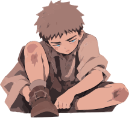
К сожалению, единственным воспитанником Даэнорта он не был. Примерно в то же время под опекой эльфа оказался другой мальчишка, его ровесник из истребленного рода Карн’Вэйн. Знакомство двух наследников едва ли можно было назвать многообещающим. Впрочем, неприязнь быстро приобрела характер заклятой дружбы.
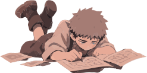
Следующие пять лет прошли среди гильдейских хлопот, уроков, тренировок и рассказов искателей, возвращавшихся из дальних странствий. Стормгард охотно слушал истории об удивительных местах, древних развалинах и могущественных волшебниках.
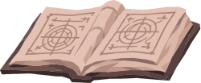
Особенно его занимала магия. Она обещала ответы на множество вопросов и, что немаловажно, позволяла задавать ещё больше.
Соперничество с Карн’Вэйном подливало масла в огонь. Стоило одному добиться успеха, как второй немедленно находил повод продемонстрировать собственные способности.
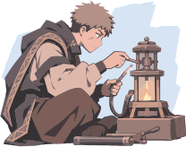
Если успех повторить не удавалось, следовало подвергнуть сомнению условия испытания. Впрочем, при появлении чего-нибудь действительно интересного все разногласия откладывались.
Тем временем поселение у ущелья росло. Появлялись новые дома, мосты и лестницы, а вместе с ними — всё больше искателей приключений. Гильдия принимала поручения, отправляла отряды в дальние земли и предоставляла двум воспитанникам почти неисчерпаемый материал для зависти.
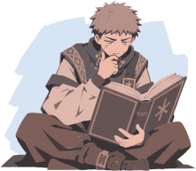
Отряды возвращались с трофеями, историями и разнообразными увечьями. Стормгарду пока доставались главным образом только истории.
К пятнадцати годам он окончательно убедился, что достаточно вырос для самостоятельных приключений. Даэнорт, разумеется, мог придерживаться иного мнения. Но разве это когда-нибудь мешало обсуждать вопрос снова?
В конце концов, Стормгард не собирался вечно оставаться подмастерьем. Где-то за пределами родного города лежал огромный мир, полный загадок, опасностей и возможностей. Возможно, там даже найдётся кто-нибудь, кому знаком его фамильный герб.
А если нет — тем хуже для мира.
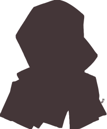
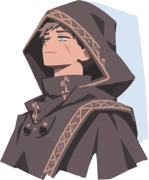
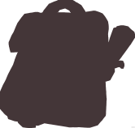
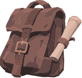